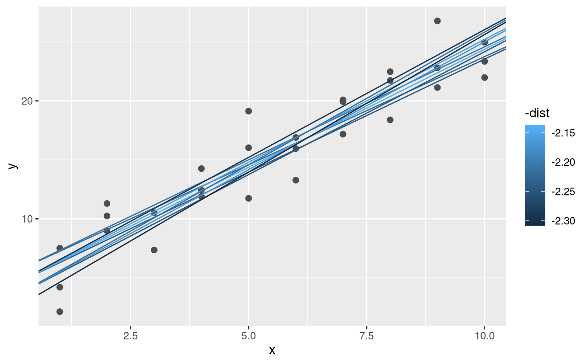
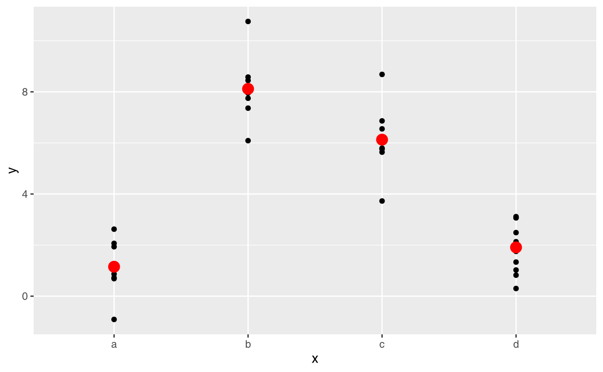
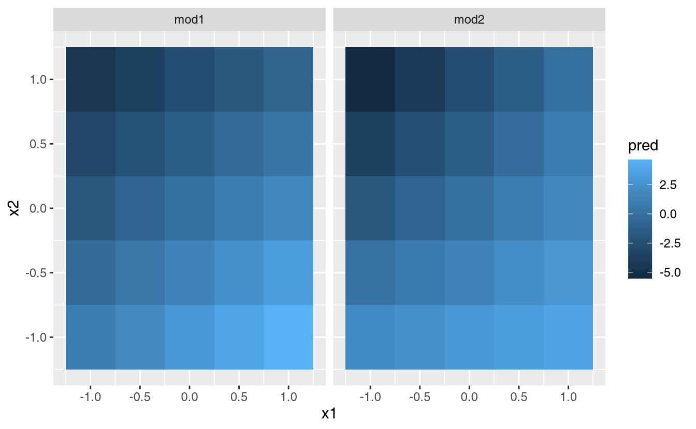

23 Model basics
23.1 Introduction
The goal of a model is to provide a simple low-dimensional summary of a dataset. In the context of this book we’re going to use models to partition data into patterns and residuals. Strong patterns will hide subtler trends, so we’ll use models to help peel back layers of structure as we explore a dataset.
However, before we can start using models on interesting, real, datasets, you need to understand the basics of how models work. For that reason, this chapter of the book is unique because it uses only simulated datasets. These datasets are very simple, and not at all interesting, but they will help you understand the essence of modelling before you apply the same techniques to real data in the next chapter.
There are two parts to a model:
First, you define a family of models that express a precise, but generic, pattern that you want to capture. For example, the pattern might be a straight line, or a quadratic curve. You will express the model family as an equation like
y = a_1 * x + a_2ory = a_1 * x ^ a_2. Here,xandyare known variables from your data, anda_1anda_2are parameters that can vary to capture different patterns.Next, you generate a fitted model by finding the model from the family that is the closest to your data. This takes the generic model family and makes it specific, like
y = 3 * x + 7ory = 9 * x ^ 2.
It’s important to understand that a fitted model is just the closest model from a family of models. That implies that you have the “best” model (according to some criteria); it doesn’t imply that you have a good model and it certainly doesn’t imply that the model is “true”. George Box puts this well in his famous aphorism:
All models are wrong, but some are useful.
It’s worth reading the fuller context of the quote:
Now it would be very remarkable if any system existing in the real world could be exactly represented by any simple model. However, cunningly chosen parsimonious models often do provide remarkably useful approximations. For example, the law PV = RT relating pressure P, volume V and temperature T of an “ideal” gas via a constant R is not exactly true for any real gas, but it frequently provides a useful approximation and furthermore its structure is informative since it springs from a physical view of the behavior of gas molecules.
For such a model there is no need to ask the question “Is the model true?”. If “truth” is to be the “whole truth” the answer must be “No”. The only question of interest is “Is the model illuminating and useful?”.
The goal of a model is not to uncover truth, but to discover a simple approximation that is still useful.
23.1.1 Prerequisites
In this chapter we’ll use the modelr package which wraps around base R’s modelling functions to make them work naturally in a pipe.
library(tidyverse)
library(modelr)
options(na.action = na.warn)23.2 A simple model
Lets take a look at the simulated dataset sim1, included with the modelr package. It contains two continuous variables, x and y. Let’s plot them to see how they’re related:
ggplot(sim1, aes(x, y)) +
geom_point()You can see a strong pattern in the data. Let’s use a model to capture that pattern and make it explicit. It’s our job to supply the basic form of the model. In this case, the relationship looks linear, i.e. y = a_0 + a_1 * x. Let’s start by getting a feel for what models from that family look like by randomly generating a few and overlaying them on the data. For this simple case, we can use geom_abline() which takes a slope and intercept as parameters. Later on we’ll learn more general techniques that work with any model.
models <- tibble(
a1 = runif(250, -20, 40),
a2 = runif(250, -5, 5)
)
ggplot(sim1, aes(x, y)) +
geom_abline(aes(intercept = a1, slope = a2), data = models, alpha = 1/4) +
geom_point() 
There are 250 models on this plot, but a lot are really bad! We need to find the good models by making precise our intuition that a good model is “close” to the data. We need a way to quantify the distance between the data and a model. Then we can fit the model by finding the value of a_0 and a_1 that generate the model with the smallest distance from this data.
One easy place to start is to find the vertical distance between each point and the model, as in the following diagram. (Note that I’ve shifted the x values slightly so you can see the individual distances.)
This distance is just the difference between the y value given by the model (the prediction), and the actual y value in the data (the response).
To compute this distance, we first turn our model family into an R function. This takes the model parameters and the data as inputs, and gives values predicted by the model as output:
model1 <- function(a, data) {
a[1] + data$x * a[2]
}
model1(c(7, 1.5), sim1)
#> [1] 8.5 8.5 8.5 10.0 10.0 10.0 11.5 11.5 11.5 13.0 13.0 13.0 14.5 14.5 14.5
#> [16] 16.0 16.0 16.0 17.5 17.5 17.5 19.0 19.0 19.0 20.5 20.5 20.5 22.0 22.0 22.0Next, we need some way to compute an overall distance between the predicted and actual values. In other words, the plot above shows 30 distances: how do we collapse that into a single number?
One common way to do this in statistics to use the “root-mean-squared deviation”. We compute the difference between actual and predicted, square them, average them, and then take the square root. This distance has lots of appealing mathematical properties, which we’re not going to talk about here. You’ll just have to take my word for it!
measure_distance <- function(mod, data) {
diff <- data$y - model1(mod, data)
sqrt(mean(diff ^ 2))
}
measure_distance(c(7, 1.5), sim1)
#> [1] 2.665212Now we can use purrr to compute the distance for all the models defined above. We need a helper function because our distance function expects the model as a numeric vector of length 2.
sim1_dist <- function(a1, a2) {
measure_distance(c(a1, a2), sim1)
}
models <- models %>%
mutate(dist = purrr::map2_dbl(a1, a2, sim1_dist))
models
#> # A tibble: 250 x 3
#> a1 a2 dist
#> <dbl> <dbl> <dbl>
#> 1 -15.2 0.0889 30.8
#> 2 30.1 -0.827 13.2
#> 3 16.0 2.27 13.2
#> 4 -10.6 1.38 18.7
#> 5 -19.6 -1.04 41.8
#> 6 7.98 4.59 19.3
#> # … with 244 more rowsNext, let’s overlay the 10 best models on to the data. I’ve coloured the models by -dist: this is an easy way to make sure that the best models (i.e. the ones with the smallest distance) get the brighest colours.
ggplot(sim1, aes(x, y)) +
geom_point(size = 2, colour = "grey30") +
geom_abline(
aes(intercept = a1, slope = a2, colour = -dist),
data = filter(models, rank(dist) <= 10)
)
We can also think about these models as observations, and visualising with a scatterplot of a1 vs a2, again coloured by -dist. We can no longer directly see how the model compares to the data, but we can see many models at once. Again, I’ve highlighted the 10 best models, this time by drawing red circles underneath them.
ggplot(models, aes(a1, a2)) +
geom_point(data = filter(models, rank(dist) <= 10), size = 4, colour = "red") +
geom_point(aes(colour = -dist))
Instead of trying lots of random models, we could be more systematic and generate an evenly spaced grid of points (this is called a grid search). I picked the parameters of the grid roughly by looking at where the best models were in the plot above.
grid <- expand.grid(
a1 = seq(-5, 20, length = 25),
a2 = seq(1, 3, length = 25)
) %>%
mutate(dist = purrr::map2_dbl(a1, a2, sim1_dist))
grid %>%
ggplot(aes(a1, a2)) +
geom_point(data = filter(grid, rank(dist) <= 10), size = 4, colour = "red") +
geom_point(aes(colour = -dist)) 
When you overlay the best 10 models back on the original data, they all look pretty good:
ggplot(sim1, aes(x, y)) +
geom_point(size = 2, colour = "grey30") +
geom_abline(
aes(intercept = a1, slope = a2, colour = -dist),
data = filter(grid, rank(dist) <= 10)
)
You could imagine iteratively making the grid finer and finer until you narrowed in on the best model. But there’s a better way to tackle that problem: a numerical minimisation tool called Newton-Raphson search. The intuition of Newton-Raphson is pretty simple: you pick a starting point and look around for the steepest slope. You then ski down that slope a little way, and then repeat again and again, until you can’t go any lower. In R, we can do that with optim():
best <- optim(c(0, 0), measure_distance, data = sim1)
best$par
#> [1] 4.222248 2.051204
ggplot(sim1, aes(x, y)) +
geom_point(size = 2, colour = "grey30") +
geom_abline(intercept = best$par[1], slope = best$par[2])
Don’t worry too much about the details of how optim() works. It’s the intuition that’s important here. If you have a function that defines the distance between a model and a dataset, an algorithm that can minimise that distance by modifying the parameters of the model can find the best model. The neat thing about this approach is that it will work for any family of models that you can write an equation for.
There’s one more approach that we can use for this model, because it’s a special case of a broader family: linear models. A linear model has the general form y = a_1 + a_2 * x_1 + a_3 * x_2 + ... + a_n * x_(n - 1). So this simple model is equivalent to a general linear model where n is 2 and x_1 is x. R has a tool specifically designed for fitting linear models called lm(). lm() has a special way to specify the model family: formulas. Formulas look like y ~ x, which lm() will translate to a function like y = a_1 + a_2 * x. We can fit the model and look at the output:
sim1_mod <- lm(y ~ x, data = sim1)
coef(sim1_mod)
#> (Intercept) x
#> 4.220822 2.051533These are exactly the same values we got with optim()! Behind the scenes lm() doesn’t use optim() but instead takes advantage of the mathematical structure of linear models. Using some connections between geometry, calculus, and linear algebra, lm() actually finds the closest model in a single step, using a sophisticated algorithm. This approach is both faster, and guarantees that there is a global minimum.
23.2.1 Exercises
One downside of the linear model is that it is sensitive to unusual values because the distance incorporates a squared term. Fit a linear model to the simulated data below, and visualise the results. Rerun a few times to generate different simulated datasets. What do you notice about the model?
sim1a <- tibble( x = rep(1:10, each = 3), y = x * 1.5 + 6 + rt(length(x), df = 2) )One way to make linear models more robust is to use a different distance measure. For example, instead of root-mean-squared distance, you could use mean-absolute distance:
measure_distance <- function(mod, data) { diff <- data$y - model1(mod, data) mean(abs(diff)) }Use
optim()to fit this model to the simulated data above and compare it to the linear model.One challenge with performing numerical optimisation is that it’s only guaranteed to find one local optimum. What’s the problem with optimising a three parameter model like this?
model1 <- function(a, data) { a[1] + data$x * a[2] + a[3] }
23.3 Visualising models
For simple models, like the one above, you can figure out what pattern the model captures by carefully studying the model family and the fitted coefficients. And if you ever take a statistics course on modelling, you’re likely to spend a lot of time doing just that. Here, however, we’re going to take a different tack. We’re going to focus on understanding a model by looking at its predictions. This has a big advantage: every type of predictive model makes predictions (otherwise what use would it be?) so we can use the same set of techniques to understand any type of predictive model.
It’s also useful to see what the model doesn’t capture, the so-called residuals which are left after subtracting the predictions from the data. Residuals are powerful because they allow us to use models to remove striking patterns so we can study the subtler trends that remain.
23.3.1 Predictions
To visualise the predictions from a model, we start by generating an evenly spaced grid of values that covers the region where our data lies. The easiest way to do that is to use modelr::data_grid(). Its first argument is a data frame, and for each subsequent argument it finds the unique variables and then generates all combinations:
grid <- sim1 %>%
data_grid(x)
grid
#> # A tibble: 10 x 1
#> x
#> <int>
#> 1 1
#> 2 2
#> 3 3
#> 4 4
#> 5 5
#> 6 6
#> # … with 4 more rows(This will get more interesting when we start to add more variables to our model.)
Next we add predictions. We’ll use modelr::add_predictions() which takes a data frame and a model. It adds the predictions from the model to a new column in the data frame:
grid <- grid %>%
add_predictions(sim1_mod)
grid
#> # A tibble: 10 x 2
#> x pred
#> <int> <dbl>
#> 1 1 6.27
#> 2 2 8.32
#> 3 3 10.4
#> 4 4 12.4
#> 5 5 14.5
#> 6 6 16.5
#> # … with 4 more rows(You can also use this function to add predictions to your original dataset.)
Next, we plot the predictions. You might wonder about all this extra work compared to just using geom_abline(). But the advantage of this approach is that it will work with any model in R, from the simplest to the most complex. You’re only limited by your visualisation skills. For more ideas about how to visualise more complex model types, you might try http://vita.had.co.nz/papers/model-vis.html.
ggplot(sim1, aes(x)) +
geom_point(aes(y = y)) +
geom_line(aes(y = pred), data = grid, colour = "red", size = 1)23.3.2 Residuals
The flip-side of predictions are residuals. The predictions tells you the pattern that the model has captured, and the residuals tell you what the model has missed. The residuals are just the distances between the observed and predicted values that we computed above.
We add residuals to the data with add_residuals(), which works much like add_predictions(). Note, however, that we use the original dataset, not a manufactured grid. This is because to compute residuals we need actual y values.
sim1 <- sim1 %>%
add_residuals(sim1_mod)
sim1
#> # A tibble: 30 x 3
#> x y resid
#> <int> <dbl> <dbl>
#> 1 1 4.20 -2.07
#> 2 1 7.51 1.24
#> 3 1 2.13 -4.15
#> 4 2 8.99 0.665
#> 5 2 10.2 1.92
#> 6 2 11.3 2.97
#> # … with 24 more rowsThere are a few different ways to understand what the residuals tell us about the model. One way is to simply draw a frequency polygon to help us understand the spread of the residuals:
ggplot(sim1, aes(resid)) +
geom_freqpoly(binwidth = 0.5)
This helps you calibrate the quality of the model: how far away are the predictions from the observed values? Note that the average of the residual will always be 0.
You’ll often want to recreate plots using the residuals instead of the original predictor. You’ll see a lot of that in the next chapter.
ggplot(sim1, aes(x, resid)) +
geom_ref_line(h = 0) +
geom_point() 
This looks like random noise, suggesting that our model has done a good job of capturing the patterns in the dataset.
23.3.3 Exercises
Instead of using
lm()to fit a straight line, you can useloess()to fit a smooth curve. Repeat the process of model fitting, grid generation, predictions, and visualisation onsim1usingloess()instead oflm(). How does the result compare togeom_smooth()?add_predictions()is paired withgather_predictions()andspread_predictions(). How do these three functions differ?What does
geom_ref_line()do? What package does it come from? Why is displaying a reference line in plots showing residuals useful and important?Why might you want to look at a frequency polygon of absolute residuals? What are the pros and cons compared to looking at the raw residuals?
23.4 Formulas and model families
You’ve seen formulas before when using facet_wrap() and facet_grid(). In R, formulas provide a general way of getting “special behaviour”. Rather than evaluating the values of the variables right away, they capture them so they can be interpreted by the function.
The majority of modelling functions in R use a standard conversion from formulas to functions. You’ve seen one simple conversion already: y ~ x is translated to y = a_1 + a_2 * x. If you want to see what R actually does, you can use the model_matrix() function. It takes a data frame and a formula and returns a tibble that defines the model equation: each column in the output is associated with one coefficient in the model, the function is always y = a_1 * out_1 + a_2 * out_2. For the simplest case of y ~ x1 this shows us something interesting:
df <- tribble(
~y, ~x1, ~x2,
4, 2, 5,
5, 1, 6
)
model_matrix(df, y ~ x1)
#> # A tibble: 2 x 2
#> `(Intercept)` x1
#> <dbl> <dbl>
#> 1 1 2
#> 2 1 1The way that R adds the intercept to the model is just by having a column that is full of ones. By default, R will always add this column. If you don’t want, you need to explicitly drop it with -1:
model_matrix(df, y ~ x1 - 1)
#> # A tibble: 2 x 1
#> x1
#> <dbl>
#> 1 2
#> 2 1The model matrix grows in an unsurprising way when you add more variables to the model:
model_matrix(df, y ~ x1 + x2)
#> # A tibble: 2 x 3
#> `(Intercept)` x1 x2
#> <dbl> <dbl> <dbl>
#> 1 1 2 5
#> 2 1 1 6This formula notation is sometimes called “Wilkinson-Rogers notation”, and was initially described in Symbolic Description of Factorial Models for Analysis of Variance, by G. N. Wilkinson and C. E. Rogers https://www.jstor.org/stable/2346786. It’s worth digging up and reading the original paper if you’d like to understand the full details of the modelling algebra.
The following sections expand on how this formula notation works for categorical variables, interactions, and transformation.
23.4.1 Categorical variables
Generating a function from a formula is straight forward when the predictor is continuous, but things get a bit more complicated when the predictor is categorical. Imagine you have a formula like y ~ sex, where sex could either be male or female. It doesn’t make sense to convert that to a formula like y = a_0 + a_1 * sex because sex isn’t a number - you can’t multiply it! Instead what R does is convert it to y = a_0 + a_1 * sex_male where sex_male is one if sex is male and zero otherwise:
df <- tribble(
~ sex, ~ response,
"male", 1,
"female", 2,
"male", 1
)
model_matrix(df, response ~ sex)
#> # A tibble: 3 x 2
#> `(Intercept)` sexmale
#> <dbl> <dbl>
#> 1 1 1
#> 2 1 0
#> 3 1 1You might wonder why R also doesn’t create a sexfemale column. The problem is that would create a column that is perfectly predictable based on the other columns (i.e. sexfemale = 1 - sexmale). Unfortunately the exact details of why this is a problem is beyond the scope of this book, but basically it creates a model family that is too flexible, and will have infinitely many models that are equally close to the data.
Fortunately, however, if you focus on visualising predictions you don’t need to worry about the exact parameterisation. Let’s look at some data and models to make that concrete. Here’s the sim2 dataset from modelr:
ggplot(sim2) +
geom_point(aes(x, y))
We can fit a model to it, and generate predictions:
mod2 <- lm(y ~ x, data = sim2)
grid <- sim2 %>%
data_grid(x) %>%
add_predictions(mod2)
grid
#> # A tibble: 4 x 2
#> x pred
#> <chr> <dbl>
#> 1 a 1.15
#> 2 b 8.12
#> 3 c 6.13
#> 4 d 1.91Effectively, a model with a categorical x will predict the mean value for each category. (Why? Because the mean minimises the root-mean-squared distance.) That’s easy to see if we overlay the predictions on top of the original data:
ggplot(sim2, aes(x)) +
geom_point(aes(y = y)) +
geom_point(data = grid, aes(y = pred), colour = "red", size = 4)
You can’t make predictions about levels that you didn’t observe. Sometimes you’ll do this by accident so it’s good to recognise this error message:
tibble(x = "e") %>%
add_predictions(mod2)
#> Error in model.frame.default(Terms, newdata, na.action = na.action, xlev = object$xlevels): factor x has new level e23.4.2 Interactions (continuous and categorical)
What happens when you combine a continuous and a categorical variable? sim3 contains a categorical predictor and a continuous predictor. We can visualise it with a simple plot:
ggplot(sim3, aes(x1, y)) +
geom_point(aes(colour = x2))There are two possible models you could fit to this data:
mod1 <- lm(y ~ x1 + x2, data = sim3)
mod2 <- lm(y ~ x1 * x2, data = sim3)When you add variables with +, the model will estimate each effect independent of all the others. It’s possible to fit the so-called interaction by using *. For example, y ~ x1 * x2 is translated to y = a_0 + a_1 * x1 + a_2 * x2 + a_12 * x1 * x2. Note that whenever you use *, both the interaction and the individual components are included in the model.
To visualise these models we need two new tricks:
We have two predictors, so we need to give
data_grid()both variables. It finds all the unique values ofx1andx2and then generates all combinations.To generate predictions from both models simultaneously, we can use
gather_predictions()which adds each prediction as a row. The complement ofgather_predictions()isspread_predictions()which adds each prediction to a new column.
Together this gives us:
grid <- sim3 %>%
data_grid(x1, x2) %>%
gather_predictions(mod1, mod2)
grid
#> # A tibble: 80 x 4
#> model x1 x2 pred
#> <chr> <int> <fct> <dbl>
#> 1 mod1 1 a 1.67
#> 2 mod1 1 b 4.56
#> 3 mod1 1 c 6.48
#> 4 mod1 1 d 4.03
#> 5 mod1 2 a 1.48
#> 6 mod1 2 b 4.37
#> # … with 74 more rowsWe can visualise the results for both models on one plot using facetting:
ggplot(sim3, aes(x1, y, colour = x2)) +
geom_point() +
geom_line(data = grid, aes(y = pred)) +
facet_wrap(~ model)
Note that the model that uses + has the same slope for each line, but different intercepts. The model that uses * has a different slope and intercept for each line.
Which model is better for this data? We can take look at the residuals. Here I’ve facetted by both model and x2 because it makes it easier to see the pattern within each group.
sim3 <- sim3 %>%
gather_residuals(mod1, mod2)
ggplot(sim3, aes(x1, resid, colour = x2)) +
geom_point() +
facet_grid(model ~ x2)There is little obvious pattern in the residuals for mod2. The residuals for mod1 show that the model has clearly missed some pattern in b, and less so, but still present is pattern in c, and d. You might wonder if there’s a precise way to tell which of mod1 or mod2 is better. There is, but it requires a lot of mathematical background, and we don’t really care. Here, we’re interested in a qualitative assessment of whether or not the model has captured the pattern that we’re interested in.
23.4.3 Interactions (two continuous)
Let’s take a look at the equivalent model for two continuous variables. Initially things proceed almost identically to the previous example:
mod1 <- lm(y ~ x1 + x2, data = sim4)
mod2 <- lm(y ~ x1 * x2, data = sim4)
grid <- sim4 %>%
data_grid(
x1 = seq_range(x1, 5),
x2 = seq_range(x2, 5)
) %>%
gather_predictions(mod1, mod2)
grid
#> # A tibble: 50 x 4
#> model x1 x2 pred
#> <chr> <dbl> <dbl> <dbl>
#> 1 mod1 -1 -1 0.996
#> 2 mod1 -1 -0.5 -0.395
#> 3 mod1 -1 0 -1.79
#> 4 mod1 -1 0.5 -3.18
#> 5 mod1 -1 1 -4.57
#> 6 mod1 -0.5 -1 1.91
#> # … with 44 more rowsNote my use of seq_range() inside data_grid(). Instead of using every unique value of x, I’m going to use a regularly spaced grid of five values between the minimum and maximum numbers. It’s probably not super important here, but it’s a useful technique in general. There are two other useful arguments to seq_range():
pretty = TRUEwill generate a “pretty” sequence, i.e. something that looks nice to the human eye. This is useful if you want to produce tables of output:seq_range(c(0.0123, 0.923423), n = 5) #> [1] 0.0123000 0.2400808 0.4678615 0.6956423 0.9234230 seq_range(c(0.0123, 0.923423), n = 5, pretty = TRUE) #> [1] 0.0 0.2 0.4 0.6 0.8 1.0trim = 0.1will trim off 10% of the tail values. This is useful if the variables have a long tailed distribution and you want to focus on generating values near the center:x1 <- rcauchy(100) seq_range(x1, n = 5) #> [1] -115.86934 -83.52130 -51.17325 -18.82520 13.52284 seq_range(x1, n = 5, trim = 0.10) #> [1] -13.841101 -8.709812 -3.578522 1.552767 6.684057 seq_range(x1, n = 5, trim = 0.25) #> [1] -2.17345439 -1.05938856 0.05467728 1.16874312 2.28280896 seq_range(x1, n = 5, trim = 0.50) #> [1] -0.7249565 -0.2677888 0.1893788 0.6465465 1.1037141expand = 0.1is in some sense the opposite oftrim()it expands the range by 10%.x2 <- c(0, 1) seq_range(x2, n = 5) #> [1] 0.00 0.25 0.50 0.75 1.00 seq_range(x2, n = 5, expand = 0.10) #> [1] -0.050 0.225 0.500 0.775 1.050 seq_range(x2, n = 5, expand = 0.25) #> [1] -0.1250 0.1875 0.5000 0.8125 1.1250 seq_range(x2, n = 5, expand = 0.50) #> [1] -0.250 0.125 0.500 0.875 1.250
Next let’s try and visualise that model. We have two continuous predictors, so you can imagine the model like a 3d surface. We could display that using geom_tile():
ggplot(grid, aes(x1, x2)) +
geom_tile(aes(fill = pred)) +
facet_wrap(~ model)
That doesn’t suggest that the models are very different! But that’s partly an illusion: our eyes and brains are not very good at accurately comparing shades of colour. Instead of looking at the surface from the top, we could look at it from either side, showing multiple slices:
ggplot(grid, aes(x1, pred, colour = x2, group = x2)) +
geom_line() +
facet_wrap(~ model)
ggplot(grid, aes(x2, pred, colour = x1, group = x1)) +
geom_line() +
facet_wrap(~ model)
This shows you that interaction between two continuous variables works basically the same way as for a categorical and continuous variable. An interaction says that there’s not a fixed offset: you need to consider both values of x1 and x2 simultaneously in order to predict y.
You can see that even with just two continuous variables, coming up with good visualisations are hard. But that’s reasonable: you shouldn’t expect it will be easy to understand how three or more variables simultaneously interact! But again, we’re saved a little because we’re using models for exploration, and you can gradually build up your model over time. The model doesn’t have to be perfect, it just has to help you reveal a little more about your data.
I spent some time looking at the residuals to see if I could figure if mod2 did better than mod1. I think it does, but it’s pretty subtle. You’ll have a chance to work on it in the exercises.
23.4.4 Transformations
You can also perform transformations inside the model formula. For example, log(y) ~ sqrt(x1) + x2 is transformed to log(y) = a_1 + a_2 * sqrt(x1) + a_3 * x2. If your transformation involves +, *, ^, or -, you’ll need to wrap it in I() so R doesn’t treat it like part of the model specification. For example, y ~ x + I(x ^ 2) is translated to y = a_1 + a_2 * x + a_3 * x^2. If you forget the I() and specify y ~ x ^ 2 + x, R will compute y ~ x * x + x. x * x means the interaction of x with itself, which is the same as x. R automatically drops redundant variables so x + x become x, meaning that y ~ x ^ 2 + x specifies the function y = a_1 + a_2 * x. That’s probably not what you intended!
Again, if you get confused about what your model is doing, you can always use model_matrix() to see exactly what equation lm() is fitting:
df <- tribble(
~y, ~x,
1, 1,
2, 2,
3, 3
)
model_matrix(df, y ~ x^2 + x)
#> # A tibble: 3 x 2
#> `(Intercept)` x
#> <dbl> <dbl>
#> 1 1 1
#> 2 1 2
#> 3 1 3
model_matrix(df, y ~ I(x^2) + x)
#> # A tibble: 3 x 3
#> `(Intercept)` `I(x^2)` x
#> <dbl> <dbl> <dbl>
#> 1 1 1 1
#> 2 1 4 2
#> 3 1 9 3Transformations are useful because you can use them to approximate non-linear functions. If you’ve taken a calculus class, you may have heard of Taylor’s theorem which says you can approximate any smooth function with an infinite sum of polynomials. That means you can use a polynomial function to get arbitrarily close to a smooth function by fitting an equation like y = a_1 + a_2 * x + a_3 * x^2 + a_4 * x ^ 3. Typing that sequence by hand is tedious, so R provides a helper function: poly():
model_matrix(df, y ~ poly(x, 2))
#> # A tibble: 3 x 3
#> `(Intercept)` `poly(x, 2)1` `poly(x, 2)2`
#> <dbl> <dbl> <dbl>
#> 1 1 -7.07e- 1 0.408
#> 2 1 -7.85e-17 -0.816
#> 3 1 7.07e- 1 0.408However there’s one major problem with using poly(): outside the range of the data, polynomials rapidly shoot off to positive or negative infinity. One safer alternative is to use the natural spline, splines::ns().
library(splines)
model_matrix(df, y ~ ns(x, 2))
#> # A tibble: 3 x 3
#> `(Intercept)` `ns(x, 2)1` `ns(x, 2)2`
#> <dbl> <dbl> <dbl>
#> 1 1 0 0
#> 2 1 0.566 -0.211
#> 3 1 0.344 0.771Let’s see what that looks like when we try and approximate a non-linear function:
sim5 <- tibble(
x = seq(0, 3.5 * pi, length = 50),
y = 4 * sin(x) + rnorm(length(x))
)
ggplot(sim5, aes(x, y)) +
geom_point()
I’m going to fit five models to this data.
mod1 <- lm(y ~ ns(x, 1), data = sim5)
mod2 <- lm(y ~ ns(x, 2), data = sim5)
mod3 <- lm(y ~ ns(x, 3), data = sim5)
mod4 <- lm(y ~ ns(x, 4), data = sim5)
mod5 <- lm(y ~ ns(x, 5), data = sim5)
grid <- sim5 %>%
data_grid(x = seq_range(x, n = 50, expand = 0.1)) %>%
gather_predictions(mod1, mod2, mod3, mod4, mod5, .pred = "y")
ggplot(sim5, aes(x, y)) +
geom_point() +
geom_line(data = grid, colour = "red") +
facet_wrap(~ model)
Notice that the extrapolation outside the range of the data is clearly bad. This is the downside to approximating a function with a polynomial. But this is a very real problem with every model: the model can never tell you if the behaviour is true when you start extrapolating outside the range of the data that you have seen. You must rely on theory and science.
23.4.5 Exercises
What happens if you repeat the analysis of
sim2using a model without an intercept. What happens to the model equation? What happens to the predictions?Use
model_matrix()to explore the equations generated for the models I fit tosim3andsim4. Why is*a good shorthand for interaction?Using the basic principles, convert the formulas in the following two models into functions. (Hint: start by converting the categorical variable into 0-1 variables.)
mod1 <- lm(y ~ x1 + x2, data = sim3) mod2 <- lm(y ~ x1 * x2, data = sim3)For
sim4, which ofmod1andmod2is better? I thinkmod2does a slightly better job at removing patterns, but it’s pretty subtle. Can you come up with a plot to support my claim?
23.5 Missing values
Missing values obviously can not convey any information about the relationship between the variables, so modelling functions will drop any rows that contain missing values. R’s default behaviour is to silently drop them, but options(na.action = na.warn) (run in the prerequisites), makes sure you get a warning.
df <- tribble(
~x, ~y,
1, 2.2,
2, NA,
3, 3.5,
4, 8.3,
NA, 10
)
mod <- lm(y ~ x, data = df)
#> Warning: Dropping 2 rows with missing valuesTo suppress the warning, set na.action = na.exclude:
mod <- lm(y ~ x, data = df, na.action = na.exclude)You can always see exactly how many observations were used with nobs():
nobs(mod)
#> [1] 323.6 Other model families
This chapter has focussed exclusively on the class of linear models, which assume a relationship of the form y = a_1 * x1 + a_2 * x2 + ... + a_n * xn. Linear models additionally assume that the residuals have a normal distribution, which we haven’t talked about. There are a large set of model classes that extend the linear model in various interesting ways. Some of them are:
Generalised linear models, e.g.
stats::glm(). Linear models assume that the response is continuous and the error has a normal distribution. Generalised linear models extend linear models to include non-continuous responses (e.g. binary data or counts). They work by defining a distance metric based on the statistical idea of likelihood.Generalised additive models, e.g.
mgcv::gam(), extend generalised linear models to incorporate arbitrary smooth functions. That means you can write a formula likey ~ s(x)which becomes an equation likey = f(x)and letgam()estimate what that function is (subject to some smoothness constraints to make the problem tractable).Penalised linear models, e.g.
glmnet::glmnet(), add a penalty term to the distance that penalises complex models (as defined by the distance between the parameter vector and the origin). This tends to make models that generalise better to new datasets from the same population.Robust linear models, e.g.
MASS::rlm(), tweak the distance to downweight points that are very far away. This makes them less sensitive to the presence of outliers, at the cost of being not quite as good when there are no outliers.Trees, e.g.
rpart::rpart(), attack the problem in a completely different way than linear models. They fit a piece-wise constant model, splitting the data into progressively smaller and smaller pieces. Trees aren’t terribly effective by themselves, but they are very powerful when used in aggregate by models like random forests (e.g.randomForest::randomForest()) or gradient boosting machines (e.g.xgboost::xgboost.)
These models all work similarly from a programming perspective. Once you’ve mastered linear models, you should find it easy to master the mechanics of these other model classes. Being a skilled modeller is a mixture of some good general principles and having a big toolbox of techniques. Now that you’ve learned some general tools and one useful class of models, you can go on and learn more classes from other sources.